PLAY
Bio
Born in East London but currently residing in Paris, Flora Hibberd has been described as:
‘It doesn’t get any better than this, haunting, beautiful
and timeless… I can’t wait to hear more.’
Folk Radio UK
‘One of the foremost faces of a rising movement in contemporary folk music’
For Folk’s Sake
‘A spectacular newcomer'
Beehive Candy
The Healing
And I made some bad choices
There were some led astray
Loved nightly slept lightly
Washed my troubles away
Washed them in the white water
Pushed them under pushed them in
And the candlelights are gleaming
But this darkness is within
O dark husband
I wait here where you should have been
And burn some holy oil
Hoping that something is forgiven
O distant one
I am ready I am ready for the healing now to come
And I know that they are kneeling now
And I hear the static roar
Lover I have crossed over
And I see it all so new
And if you don’t know me now
Well you never really knew
Shine A Signal
As you stare into
The open mouth of the world
I was trying to reach you all evening
But there’s still so much to learn
I tried to leave you behind
So many times but I return
Then the big moon rose up high and wild
And I am weak as a wave
Forever breaking on your shore
Wherever you are
I shine a signal
Whoever you are
I send a call
Mmmmmm
This is the end and the
Beginning and it’s time that is
Collapsing as you’re spinning out
To join the other planets
And your gravity pull
And your sunrise arms are waving now
And I cast it to the sky
I don’t ask why anymore
The mystery grows every day
Wherever you are
I shine a signal
Whoever you are
I send a call
I need you all the time
All the time
To the rocks
It’s six o’clock and I’m on the cliff again
As another day sinks down on the world
And I’ve been here so long
I know the rock on the horizon like a song
But if I sung it now to you it would only make
you sad
Bring back that bad feeling that you had
And I couldn’t even hold you at the end
But it goes ooooh
It’s six o’clock and I’m on the cliff again
As another day sinks down on the world
And I’ve been here so long
I know the rock on the horizon like a song
In Violence
I hurried on
Heading for the glass river
I came upon
The woman that you carved
The headless one
Ripped from the red earth mother
To lie under the sun
To lie beneath the shadow of another
And your eye was empty
And your mouth it moved in silence
And everything she gave you
You returned to me in violence
But don’t you see don’t you see
I have known it all before
Known a thousand hands
My love like yours
Pushing in pushing in
O to summon up a storm
And the wind and the wind
Blowing black across the floor
It’s a sin it’s a sin
And the roar
O you
You are the night wind too
You have a wound like any other
Yes you are like so many others
Yes I have twisted ’neath the pin
And what a sacrifice to offer
As you dig the darkness in
And yet still you call me lover
Draw your white chalk on the earth
So I draw my strength from the rest of them
And I spill my blood on the wretched dirt
To rub out your little sin
I cast out your little sin
It blew through me like the wind
Pushing in pushing in
And they summon up a storm
And the wind and the wind
And the wind how it roars
And the wind and the wind
As it tears across the floor
It’s a sin it’s a sin
It’s the white cross on the door
As Long As There
Is Night
Is Night
I was a saint on a balcony
Heaven blazing in my head
I knew you then as a sailor
Drifting deathless on the shore
And the river and the moon stood still
And the sea a silver bed
And I walked out in the dark town
I remember everything now
Though I have spent my days trying to forget
But how your body shines in the moonlight
I will make it mine for a while
As long as there is night and the grey wind sighs
And aching one
What is it burns within?
O come on I can feel it
The memory of skin
I watched it all from above
Saw the flames rise
And the holy dove
And the yellow skies
You call it love
But how your body shines in the moonlight
I will make it mine for a while
As long as there is night and the grey wind sighs
I Let You Go
Your house being the last
Before the infinite
Your body being the last
Body I’ve known
I’ve known them well
I’ve held them close
I let them go
I’ve known them well
I’ve held them close
I let them go
I stumbled out of my bed
Into another day
Remembering what you had said
A long time ago
I’ve known you well
I’ve held you close
I let you go
I’ve known you well
I’ve held you close
I let you go
Drink coffee out on the porch
Scroll through the endless news
In Paris you’re still fast asleep
This much I know
I know you well
I held you close
I let you go
I know you well
I held you close
I let you go
Last year we would have been walking
To the neighbourhood bar
Another week end without you
Wherever you are
I knew you well
I held you close
I let you go
I knew you well
I held you close
I let you go
Shenandoah
Shenandoah, how long will I miss you
Tonight you're far away as the Kentucky moon
And I know you hold a secret of mine or two
Tonight little darling my heart's with you
Wabash between us feel the cannon ball blues
Maybe I really did see the light
Halfway to heaven's fine
But I could not be sure
Halfway is all there ever was
And I know you hold a secret of yours or two
Tonight, little darlin, my heart's with you
There's just so much a man can miss
And just no end to what he can regret
And I'm holding on to whatever hope shows through
Tonight little darling my heart's with you
Tonight little darling my heart's with you
- B
- I
- 0
- L
- Y
- R
- I
- C
- S